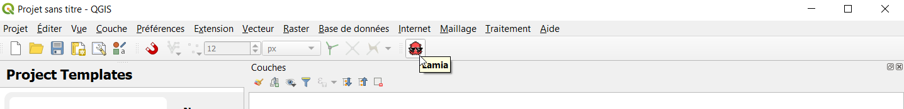
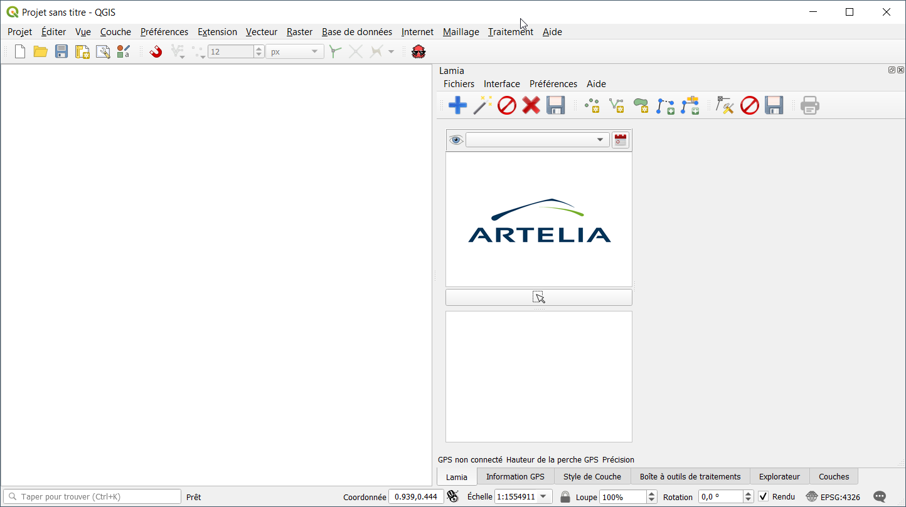

Le projet Lamia¶
Nous cherchons à aider à la construction de base de données robustes et cohérentes qui pourront vivre pendant des années et permettre le développement d’une connaissance forte des infrastructures afin de permettre le passage d’une approche de déconstruction/reconstruction à une approche de gestion patrimoniale et de maintenance préventive.
Notre but final est de permettre une réduction des coûts de maintenance des grandes infrastructures linéaires telles que les digues, les routes ou encore les ponts, tout en en limitant drastiquement l’impact écologique.
Nous cherchons à fournir à tous les secteurs public et privé un outil simple d’utilisation pour la collecte, la maintenance et la vie d’une donnée de grande qualité sur les infrastructures linéaires.
Le projet LAMIA est développé et maintenu par ARTELIA et diffusé sous licence GNU GPL v3 (ou postérieure).

This is a short caption for a figure.¶ |

This is a short caption for a figure.¶ |
Content :
Documentation utilisateur en français
User english documentation
Development